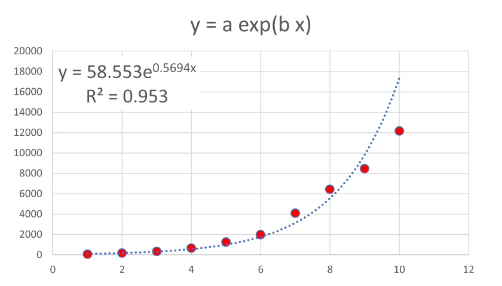
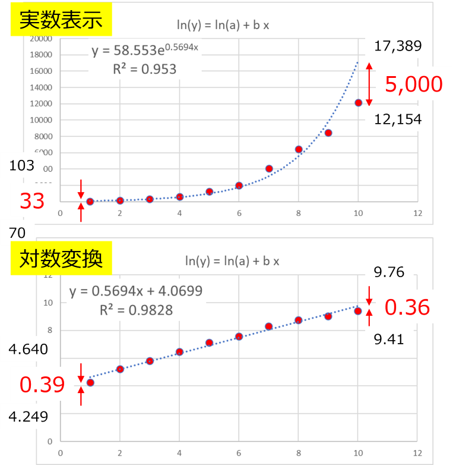
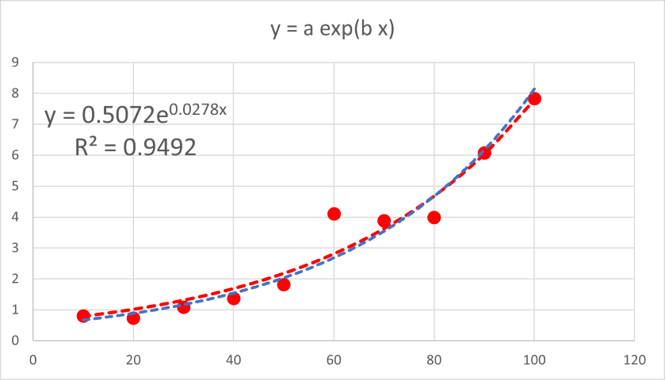

エクセルでの近似 - 対数か実数か
エクセルでの近似について考えます．
今回は指数関数．
\( \Large \displaystyle y=a \ e^{bx} \)
ご存じの通り，指数関数近似では，
両辺を対数変換する
対数にした左辺（ln(y))とｘとで直線近似を行う
というのが一般的です，エクセルでも同様の方法をとっています．
\( \Large \begin{eqnarray} \displaystyle ln(y) &=&ln(a \ e^{bx}) \\
&=& ln(a) + b \ x
\\
\end{eqnarray} \)
ln(y)とｘとの間には直線関係がありますので，直線近似が可能となります．
この手法が正しいかどうか，実際に確認してみましょう．
このデータをエクセルで指数近似すると，

となり，近似してくれますが，あまりうまくいっていないことがわかります．
それは，最小二乗が実際のデータと予測値との差分をできるだけ減らす，ことにあるからです．
実際に恥のデータで見比べてみると，

右端の結果は実際には5,000もの差があるのに,対数表時にすると0.36，左端のデータは33しか差がないのに，対数表示では0.39と右端の対数の結果より大きくなっちゃいます．
対数にすることで，より大きな値よりも小さい値にウェイトをかけた近似，となります．
では，指数表示でより正確な近似を行うためにはどうしたらいいか，それは，
非線形近似
となります，中身については私もよくわからないのですが，エクセルには，
ソルバー
という便利な解析機能がありますので，これを用いればいいことがわかります．実際に行ってみると，
となり（青線が指数近似，赤線がソルバー）となり，見かけ上もよく近似できていることがわかります．
実際に残差の二乗和を見ても，6/100，程度に減少していることがわかります．
ただ，
× 指数近似
〇 ソルバー
がいつも適用できるわけではなさそうです．
例えば，あまりｙの値の桁が変わらない場合（縦軸に注目），

ほとんど二つの近似に差がありません（この場合には残差二乗和は95％程度の減少にしかならない）．
さらに，ソルバーでは，初期値，が重要となります，実際に上のデータで異なる初期値を与えると指数近似のほうが残差二乗和が少なくなる場合があります．
要は，正しく理解し，正しく使う，が必要ですね．